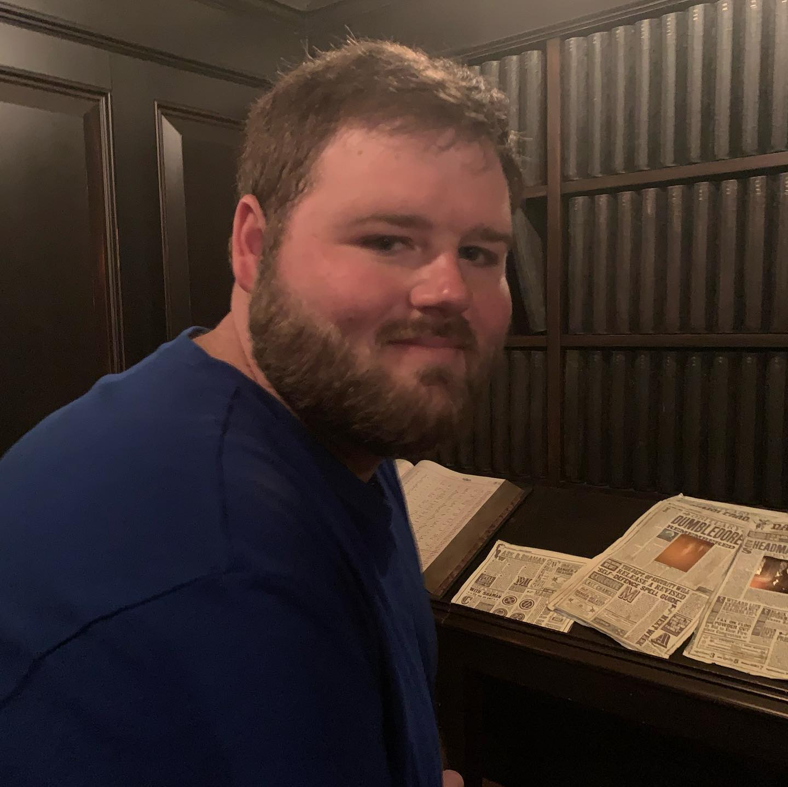

Looking to transition from IT support and networking into full-stack web development. My background is quite varied and I've taken quite the circuitous road to get here. I grew up in Big Spring Texas and was active in bands and many academic events. I competed at the state level in both musical performance, where I played the trombone, and at multiple mathematics events. I decided to go to Texas Christian University and pursue a music degree. Shortly after arriving I changed degrees to Math and pursued a career as a high school math teacher. Due to financial reasons I ended up leaving the education field and bounced around different careers until I wound up falling into IT.
My first foray was leaving my profession in insurance sales at the time and starting a business to mine cryptocurrency. I ended up expanding the venture, added in business partners, and continued to research market trends and price hardware. I was responsible for building and maintaining the mining rigs. This involved sourcing hardware, building and configuring the computers, coming up with maintenance schedules and handling the software side. I configured the entire endeavour that I could run the machines remotely from my cell phone, and the mined currency would transfer immediately to a centralized wallet we had set up. Unfortunately the whole industry took a turn for the worse in 2018 and our enterprise ended up costing more in electricity costs than was actually earning. We decided to close down the business, but I’d enjoyed my foray into IT so much I decided to pursue a career in it. My first job was in Geek Squad for Best Buy, then I got a job as a IT Support Specialist for Wilmington Health, eventually being promoted to a senior position.